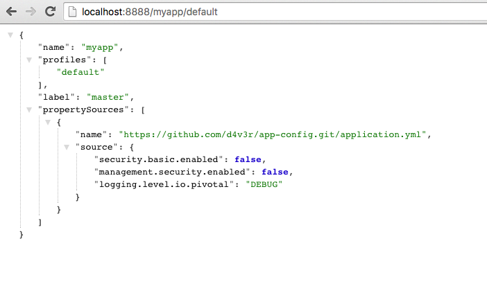
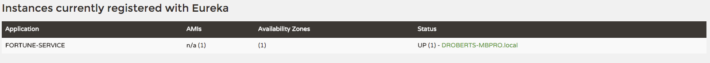
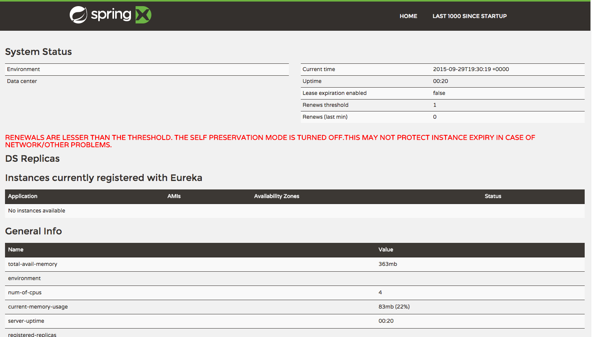
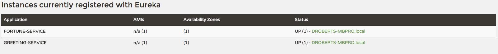
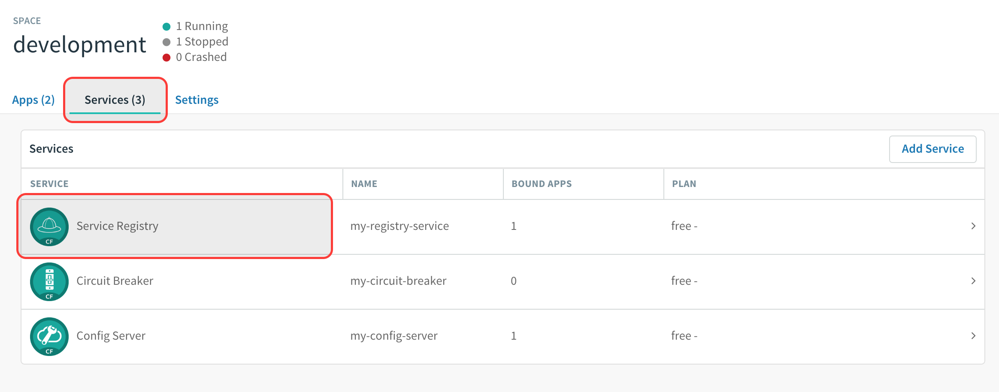
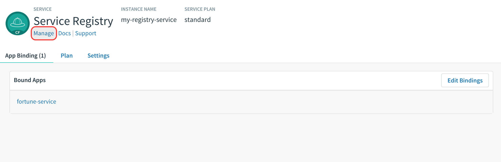
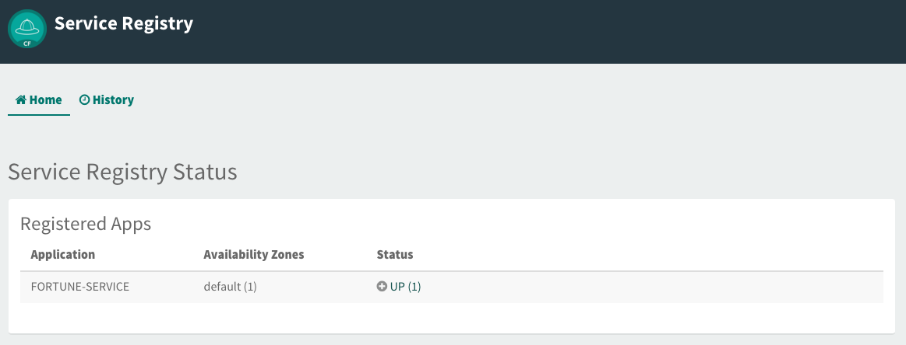
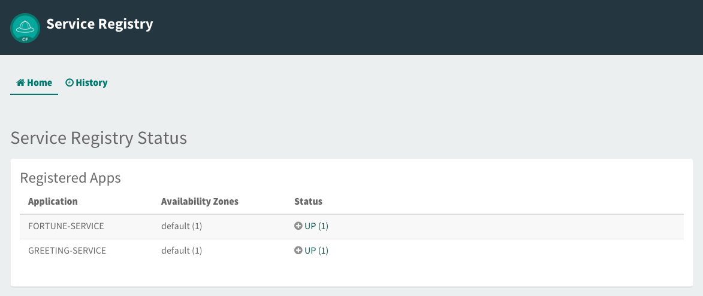

Estimated Time: 45 minutes
Requirements
What You Will Learn
- How to embed Eureka in a Spring Boot application
- How to register services (
greeting-serviceandfortune-service) with Eureka - How to discover services (
fortune-service) with Eureka - How to use Spring Cloud Services to provision a Service Registry
Exercises
Set up the app-config Repo
1) Create an $APP_CONFIG_REPO_HOME/application.yml in your fork of the app-config repo with the following contents:
security:
basic:
enabled: false
management:
security:
enabled: false
logging:
level:
io:
pivotal: DEBUG
Then commit and push back to Github.
A note about the application.yml
When the config-server’s backing repository contains an application.yml it is shared with all applications. Therefore, it is a great place to put common configuration for all applications. In this case, we have dropped security on all the endpoints and setup logging.
In the Spring Cloud Config Lab, we used application specific configuration files:
- One based on the application name
greeting-config.yml - One based on the application name + profile
greeting-config-qa.yml
Application specific files override configuration settings in the application.yml.
Set up config-server
1) Start the config-server in a terminal window. You may have a terminal window still open from the previous lab.
$ cd $SPRING_CLOUD_SERVICES_LABS_HOME/config-server
$ mvn clean spring-boot:run
2) Verify the config-server is up. Open a browser and fetch http://localhost:8888/myapp/default

Note that a random application name was used and it picked up configuration from the application.yml.
Set up service-registry
1) Review the $SPRING_CLOUD_SERVICES_LABS_HOME/service-registry/pom.xml file. By adding spring-cloud-starter-eureka-server to the classpath this application is eligible to embed an Eureka server.
<dependency>
<groupId>org.springframework.cloud</groupId>
<artifactId>spring-cloud-starter-eureka-server</artifactId>
</dependency>
2) Review the following file: $SPRING_CLOUD_SERVICES_LABS_HOME/service-registry/src/main/java/io/pivotal/ServiceRegistryApplication.java. Note the use of the @EnableEurekaServer annotation that makes this application a Eureka server.
@SpringBootApplication
@EnableEurekaServer
public class ServiceRegistryApplication {
public static void main(String[] args) {
SpringApplication.run(ServiceRegistryApplication.class, args);
}
}
3). Review the following file: $SPRING_CLOUD_SERVICES_LABS_HOME/service-registry/src/main/resources/application.yml
server:
port: 8761
eureka:
instance:
hostname: localhost
client:
registerWithEureka: false
fetchRegistry: false
serviceUrl:
defaultZone: http://${eureka.instance.hostname}:${server.port}/eureka/
About Eureka
Eureka is designed for peer awareness (running multiple instances with knowledge of each other) to further increase availability. Because of this, Eureka is not only a server but a client as well. Therefore, Eureka Servers will be clients to each other. Eureka Server A ⇄ Eureka Server B.
For the purposes of this lab, we will simplify that configuration to run in standalone mode.
Standalone mode still offers a high degree of resilience with:
- Heartbeats between the client and server to keep registrations up to date
- Client side caching, so that clients don’t go to Eureka for every lookup
- By running in Pivotal Cloud Foundry which is designed to keep applications up by design
With the above configuration, we have configured Eureka to run in standalone mode.
Understanding the configuration parameters
eureka.instance.hostname- the hostname for this service. In this case, what host to use to reach our standalone Eureka instance.eureka.client.registerWithEureka- should this application (our standalone Eureka instance) register with Eurekaeureka.client.fetchRegistry- should this application (our stand alone Eureka instance) fetch the registry (for how to discover services)eureka.client.serviceUrl.defaultZone- the Eureka instance to use for registering and discovering services. Notice it is pointing to itself (localhost,8761).
4) Open a new terminal window. Start the service-registry.
$ cd $SPRING_CLOUD_SERVICES_LABS_HOME/service-registry
$ mvn clean spring-boot:run
5) Verify the service-registry is up. Browse to http://localhost:8761/

Set up fortune-service
1) Review the $SPRING_CLOUD_SERVICES_LABS_HOME/fortune-service/src/main/resources/bootstrap.yml file. The name of this app is fortune-service. It also uses the config-server.
server:
port: 8787
spring:
application:
name: fortune-service
spring.application.name is the name the application will use when registering with Eureka.
2) Review the $SPRING_CLOUD_SERVICES_LABS_HOME/fortune-service/pom.xml file. By adding spring-cloud-services-starter-service-registry to the classpath this application is eligible to register and discover services with the service-registry.
<dependency>
<groupId>io.pivotal.spring.cloud</groupId>
<artifactId>spring-cloud-services-starter-service-registry</artifactId>
</dependency>
3) Review the following file: $SPRING_CLOUD_SERVICES_LABS_HOME/fortune-service/src/main/java/io/pivotal/FortuneServiceApplication.java. Notice the @EnableDiscoveryClient. This enables a discovery client that registers the fortune-service with the service-registry application.
@SpringBootApplication
@EnableDiscoveryClient
public class FortuneServiceApplication {
public static void main(String[] args) {
SpringApplication.run(FortuneServiceApplication.class, args);
}
}
4) Open a new terminal window. Start the fortune-service
$ cd $SPRING_CLOUD_SERVICES_LABS_HOME/fortune-service
$ mvn clean spring-boot:run
5) After the a few moments, check the service-registry dashboard. Confirm the fortune-service is registered.

The Eureka Dashboard may report a warning, because we aren’t setup with multiple peers. This can safely be ignored. 
Set up greeting-service
1) Review the $SPRING_CLOUD_SERVICES_LABS_HOME/greeting-service/src/main/resources/bootstrap.yml file. The name of this app is greeting-service. It also uses the config-server.
spring:
application:
name: greeting-service
2) Review the $SPRING_CLOUD_SERVICES_LABS_HOME/greeting-service/pom.xml file. By adding spring-cloud-services-starter-service-registry to the classpath this application is eligible to register and discover services with the service-registry.
<dependency>
<groupId>io.pivotal.spring.cloud</groupId>
<artifactId>spring-cloud-services-starter-service-registry</artifactId>
</dependency>
3) Review the following file: $SPRING_CLOUD_SERVICES_LABS_HOME/greeting-service/src/main/java/io/pivotal/GreetingServiceApplication.java. Notice the @EnableDiscoveryClient. This enables a discovery client that registers the greeting-service app with the service-registry.
@SpringBootApplication
@EnableDiscoveryClient
public class GreetingServiceApplication {
public static void main(String[] args) {
SpringApplication.run(GreetingServiceApplication.class, args);
}
}
4) Review the the following file: $SPRING_CLOUD_SERVICES_LABS_HOME/greeting-service/src/main/java/io/pivotal/greeting/GreetingController.java. Notice the DiscoveryClient. DiscoveryClient is used to discover services registered with the service-registry. See fetchFortuneServiceUrl().
@Controller
public class GreetingController {
Logger logger = LoggerFactory.getLogger(GreetingController.class);
@Autowired
private EurekaClient discoveryClient;
@RequestMapping("/")
String getGreeting(Model model) {
logger.debug("Adding greeting");
model.addAttribute("msg", "Greetings!!!");
RestTemplate restTemplate = new RestTemplate();
String fortune = restTemplate.getForObject(fetchFortuneServiceUrl(), String.class);
logger.debug("Adding fortune");
model.addAttribute("fortune", fortune);
//resolves to the greeting.vm velocity template
return "greeting";
}
private String fetchFortuneServiceUrl() {
InstanceInfo instance = discoveryClient.getNextServerFromEureka("FORTUNE-SERVICE", false);
logger.debug("instanceID: {}", instance.getId());
String fortuneServiceUrl = instance.getHomePageUrl();
logger.debug("fortune service homePageUrl: {}", fortuneServiceUrl);
return fortuneServiceUrl;
}
}
5) Open a new terminal window. Start the greeting-service app
$ cd $SPRING_CLOUD_SERVICES_LABS_HOME/greeting-service
$ mvn clean spring-boot:run
6) After the a few moments, check the service-registry dashboard http://localhost:8761. Confirm the greeting-service app is registered.

7) Browse to http://localhost:8080/ to the greeting-service application. Confirm you are seeing fortunes. Refresh as desired. Also review the terminal output for the greeting-service. See the fortune-service instanceId and homePageUrl being logged.
What Just Happened?
The greeting-service application was able to discover how to reach the fortune-service via the service-registry (Eureka).
8) When done stop the config-server, service-registry, fortune-service and greeting-service applications.
Optionally Update App Config for fortune-service and greeting-service to run on PCF
1) You may specify the registration method to use for the applications using the spring.cloud.services.registrationMethod parameter.
It can take either of two values:
route: The application will be registered using its Cloud Foundry route (this is the default).
direct: The application will be registered using its host IP and port.
The direct registration method is only compatible with Pivotal Cloud Foundry version 1.5 or higher. In Pivotal Cloud Foundry Operations Manager, within the Pivotal Elastic Runtime tile’s Security Config, the “Enable cross-container traffic within each DEA” or “Enable cross-container traffic” option must be enabled.
When using the direct registration method, requests from client applications to registered applications will not go through the Pivotal Cloud Foundry router. You can utilize this with client-side load balancing techniques using Spring Cloud and Netflix Ribbon. To read more on registration techniques go here.
Cross-container traffic has been enabled in our PCF instance. In your fork of the app-config repo add an additional section to the $APP_CONFIG_REPO_HOME/application.yml file as seen below and push back to GitHub:
security:
basic:
enabled: false
management:
security:
enabled: false
logging:
level:
io:
pivotal: DEBUG
spring: # <---NEW SECTION
cloud:
services:
registrationMethod: route
Deploy the fortune-service to PCF
1) Package fortune-service
$ mvn clean package
2) Deploy fortune-service.
$ cf push fortune-service -p target/fortune-service-0.0.1-SNAPSHOT.jar -m 512M --random-route --no-start
3) Create a Service Registry Service Instance. The service-registry service instance will not be immediately bindable. It needs a few moments to initialize.
$ cf create-service p-service-registry standard service-registry
Click on the Services tab and the Service Registry entry to navigate to your service.

Then, click on the Manage link to determine when the service-registry is ready.

4) Bind services to the fortune-service.
$ cf bind-service fortune-service config-server
$ cf bind-service fortune-service service-registry
You will need to wait and try again if you see the following message when binding the service-registry:
Binding service service-registry to app fortune-service in org dave / space dev as droberts@pivotal.io...
FAILED
Server error, status code: 502, error code: 10001, message: Service broker error: Service instance is not running and available for binding.
You can safely ignore the TIP: Use ‘cf restage’ to ensure your env variable changes take effect message from the CLI. We don’t need to restage at this time.
5) Set the TRUST_CERTS environment variable for the fortune-service application (our PCF instance is using self-signed SSL certificates).
$ cf set-env fortune-service TRUST_CERTS <your api endpoint>
You can safely ignore the TIP: Use ‘cf restage’ to ensure your env variable changes take effect message from the CLI. We don’t need to restage at this time.
6) Start the fortune-service app.
$ cf start fortune-service
7) Confirm fortune-service registered with the service-registry. This will take a few moments.
Click on the Manage link for the service-registry. You can find it by navigating to the space where your applications are deployed.

Deploy the greeting-service app to PCF
1) Package greeting-service
$ mvn clean package
2) Deploy greeting-service.
$ cf push greeting-service -p target/greeting-service-0.0.1-SNAPSHOT.jar -m 512M --random-route --no-start
3) Bind services for the greeting-service.
$ cf bind-service greeting-service config-server
$ cf bind-service greeting-service service-registry
You can safely ignore the TIP: Use ‘cf restage’ to ensure your env variable changes take effect message from the CLI. We don’t need to restage at this time.
4) If using self signed certificates, set the TRUST_CERTS environment variable for the greeting-service application.
$ cf set-env greeting-service TRUST_CERTS <your api endpoint>
You can safely ignore the TIP: Use ‘cf restage’ to ensure your env variable changes take effect message from the CLI. We don’t need to restage at this time.
5) Start the greeting-service app.
$ cf start greeting-service
6) Confirm greeting-service registered with the service-registry. This will take a few moments.

7) Browse to the greeting-service application. Confirm you are seeing fortunes. Refresh as desired.
Scale the fortune-service
1) Scale the fortune-service app instances to 3.
$ cf scale fortune-service -i 3
2) Wait for the new instances to register with the service-registry. This will take a few moments.
3) Tail the logs for the greeting-service application.
[mac, linux]
$ cf logs greeting-service | grep GreetingController
[windows]
$ cf logs greeting-service
$ # then search output for "GreetingController"
4) Refresh the greeting-service / endpoint.
5) Observe the log output. Compare the instanceId and homePageUrl being logged across log entries. The discoveryClient round robins the fortune-service instances.
2015-10-29T15:49:56.48-0500 [APP/0] OUT 2015-10-29 20:49:56.481 DEBUG 23 --- [nio-8080-exec-1] io.pivotal.greeting.GreetingController : Adding greeting
2015-10-29T15:49:56.49-0500 [APP/0] OUT 2015-10-29 20:49:56.497 DEBUG 23 --- [nio-8080-exec-1] io.pivotal.greeting.GreetingController : instanceID: 10.68.104.27:9f960352-f80b-4316-7577-61dd1815ac5f
2015-10-29T15:49:56.49-0500 [APP/0] OUT 2015-10-29 20:49:56.498 DEBUG 23 --- [nio-8080-exec-1] io.pivotal.greeting.GreetingController : fortune service homePageUrl: http://10.68.104.27:60028/
2015-10-29T15:49:56.50-0500 [APP/0] OUT 2015-10-29 20:49:56.507 DEBUG 23 --- [nio-8080-exec-1] io.pivotal.greeting.GreetingController : Adding fortune
2015-10-29T15:49:57.72-0500 [APP/0] OUT 2015-10-29 20:49:57.722 DEBUG 23 --- [nio-8080-exec-6] io.pivotal.greeting.GreetingController : Adding greeting
2015-10-29T15:49:57.73-0500 [APP/0] OUT 2015-10-29 20:49:57.737 DEBUG 23 --- [nio-8080-exec-6] io.pivotal.greeting.GreetingController : instanceID: 10.68.104.28:72aa9f59-b27f-4d85-4323-2d79a9d7720c
2015-10-29T15:49:57.73-0500 [APP/0] OUT 2015-10-29 20:49:57.737 DEBUG 23 --- [nio-8080-exec-6] io.pivotal.greeting.GreetingController : fortune service homePageUrl: http://10.68.104.28:60026/
2015-10-29T15:49:57.74-0500 [APP/0] OUT 2015-10-29 20:49:57.745 DEBUG 23 --- [nio-8080-exec-6] io.pivotal.greeting.GreetingController : Adding fortune
2015-10-29T15:49:58.66-0500 [APP/0] OUT 2015-10-29 20:49:58.660 DEBUG 23 --- [nio-8080-exec-2] io.pivotal.greeting.GreetingController : Adding greeting
2015-10-29T15:49:58.67-0500 [APP/0] OUT 2015-10-29 20:49:58.672 DEBUG 23 --- [nio-8080-exec-2] io.pivotal.greeting.GreetingController : instanceID: 10.68.104.29:e117fae6-b847-42c7-5286-8662a993351e
2015-10-29T15:49:58.67-0500 [APP/0] OUT 2015-10-29 20:49:58.673 DEBUG 23 --- [nio-8080-exec-2] io.pivotal.greeting.GreetingController : fortune service homePageUrl: http://10.68.104.29:60020/
2015-10-29T15:49:58.68-0500 [APP/0] OUT 2015-10-29 20:49:58.682 DEBUG 23 --- [nio-8080-exec-2] io.pivotal.greeting.GreetingController : Adding fortune
2015-10-29T15:49:59.60-0500 [APP/0] OUT 2015-10-29 20:49:59.609 DEBUG 23 --- [io-8080-exec-10] io.pivotal.greeting.GreetingController : Adding greeting
2015-10-29T15:49:59.62-0500 [APP/0] OUT 2015-10-29 20:49:59.626 DEBUG 23 --- [io-8080-exec-10] io.pivotal.greeting.GreetingController : instanceID: 10.68.104.27:9f960352-f80b-4316-7577-61dd1815ac5f
2015-10-29T15:49:59.62-0500 [APP/0] OUT 2015-10-29 20:49:59.626 DEBUG 23 --- [io-8080-exec-10] io.pivotal.greeting.GreetingController : fortune service homePageUrl: http://10.68.104.27:60028/
2015-10-29T15:49:59.63-0500 [APP/0] OUT 2015-10-29 20:49:59.637 DEBUG 23 --- [io-8080-exec-10] io.pivotal.greeting.GreetingController : Adding fortune
2015-10-29T15:50:00.54-0500 [APP/0] OUT 2015-10-29 20:50:00.548 DEBUG 23 --- [nio-8080-exec-1] io.pivotal.greeting.GreetingController : Adding greeting
2015-10-29T15:50:00.56-0500 [APP/0] OUT 2015-10-29 20:50:00.564 DEBUG 23 --- [nio-8080-exec-1] io.pivotal.greeting.GreetingController : instanceID: 10.68.104.28:72aa9f59-b27f-4d85-4323-2d79a9d7720c
2015-10-29T15:50:00.56-0500 [APP/0] OUT 2015-10-29 20:50:00.564 DEBUG 23 --- [nio-8080-exec-1] io.pivotal.greeting.GreetingController : fortune service homePageUrl: http://10.68.104.28:60026/
2015-10-29T15:50:00.57-0500 [APP/0] OUT 2015-10-29 20:50:00.572 DEBUG 23 --- [nio-8080-exec-1] io.pivotal.greeting.GreetingController : Adding fortune
If you are not seeing this behavior, make sure that your logging level is set to DEBUG and you have refreshed the configurations for the greeting service.
What Just Happened?
The greeting-service and fortune-service both registered with the service-registry (Eureka). The greeting-service was able to locate the fortune-service via the service-registry. The greeting-service round robins requests to all the fortune-service instances.